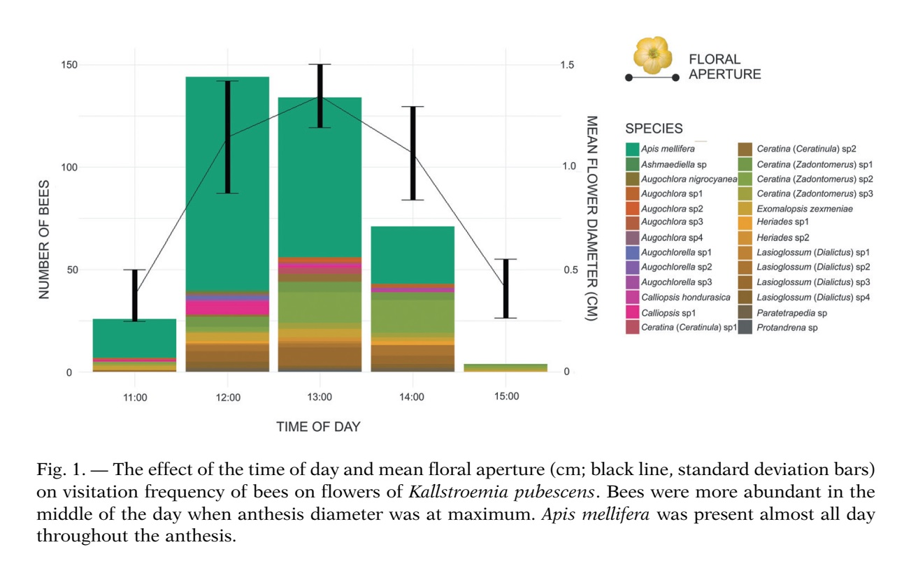
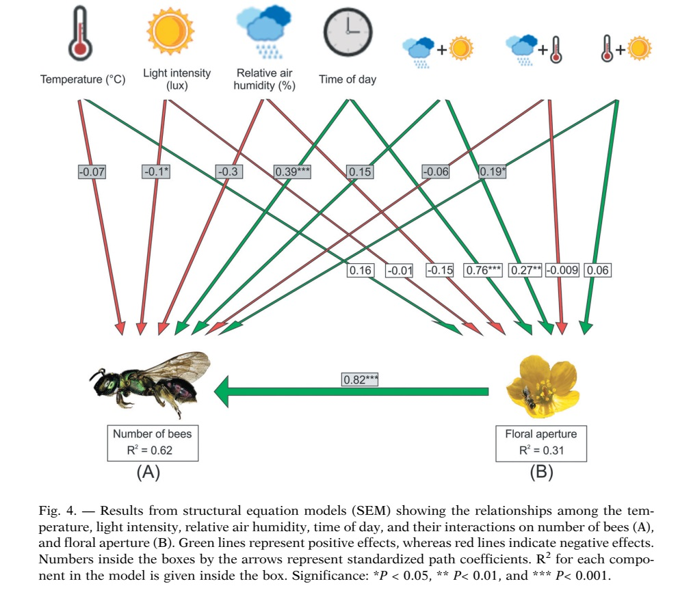

Efectos del despliegue floral y del ambiente abiótico sobre la actividad de forrajeo de las abejas en Kallstroemia pubescens (Zygophyllaceae).
 Los domacios son estructuras huecas en las plantas ocupadas por colonias de hormigas, que a su vez les proporcionan protección contra los herbívoros. En las plantas, la competencia por recursos ha impulsado cambios relacionados al sexo en los patrones de asignación de recursos a los rasgos del historias de vida y defensa contra los herbívoros. La hipótesis de la competencia de recursos (RCH) propone que las plantas femeninas, debido a su mayor inversión en la reproducción, destinarán menos recursos a la producción de defensas, mostrando un mayor daño por parte de los herbívoros que otras formas sexuales. Nosotros hipotetizamos la existencia de diferencias asociadas al sexo en los rasgos defensivos de las plantas con domacios, siendo las plantas femeninas menos defendidas debido a las diferencias en los rasgos de los domacios, como el tamaño, el número de domacios y su posición, exhibiendo más daño por herbívoros que las plantas hermafroditas de Myriocarpa longipes, una mirmecófita neotropical facultativa.
 Encontramos ocho especies de hormigas habitando los domacios; algunas especies cohabitaban la misma planta, incluso la misma rama. Nuestros resultados son coherentes con las predicciones de la RCH, ya que las plantas femeninas tenían domacios habitados por hormigas restringidas a la posición media de sus ramas y presentaban mayores daños por herbívoros en las hojas que las hermafroditas. Sin embargo, no encontramos diferencias en el tamaño de los domacios ni en el área foliar entre las formas sexuales. Nuestro estudio proporciona pruebas de las diferencias intersexuales en la posición de los domacios y la herbivoría en un mutualismo facultativo hormiga-planta en M. longipes. Destacamos la importancia de considerar el sexo de la planta en las interacciones hormiga-planta. Las diferencias en la asignación de recursos relacionadas con la reproducción sexual podrían influir en el resultado de las interacciones hormiga-planta.
Publicación completa en: